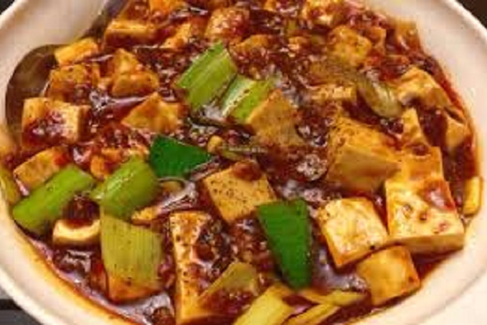

Ingredients
TofuOyster sauceCooking wine
Soy sauceSpicy sauceGinger
BruschettaChopped green onion
Red pepperSaltPepper
Directions
1. Cut the Tofu. Pour some oil into the pan. When the is 50% hot, add 300g tofu cubes.
2. Fry until both sides are golden, dish up.
3. Mince the ginger, gaelic and green onion. Cut the red pepper. Add some oil to the pot, add a little pepper, red pepper, ginger, garlic and green onion. Saute them.

4. Then add 2 teaspoons of spicy sauce, 1 teaspoon of oyster sauce, 1 tablespoon of soy sauce, and stir well.
5. Add 250ml of water, stir well, simmer on low heat.
6. After the sauce is boiled, add tofu and mix well.
7. Add one-third teaspoon of salt, and some cooking wine. Simmer with higher heat until thickening.